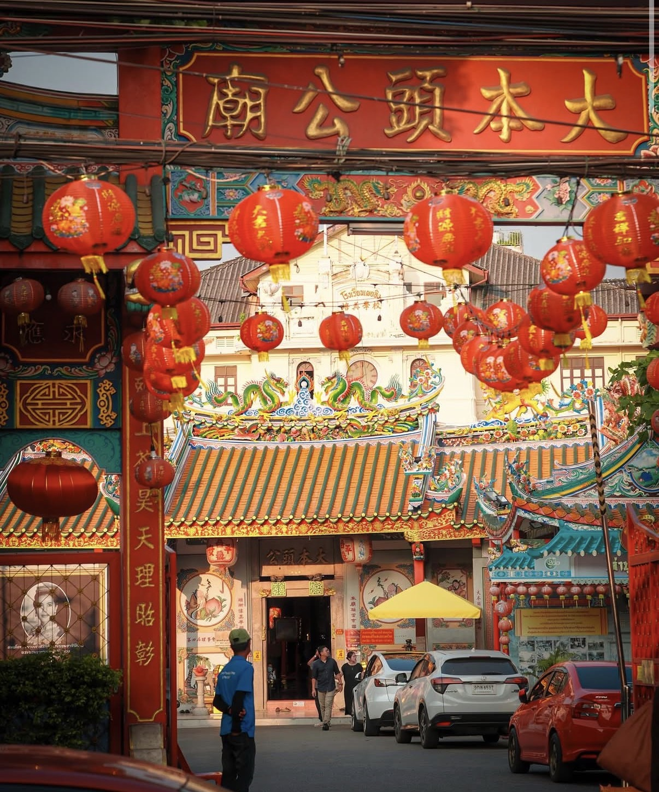
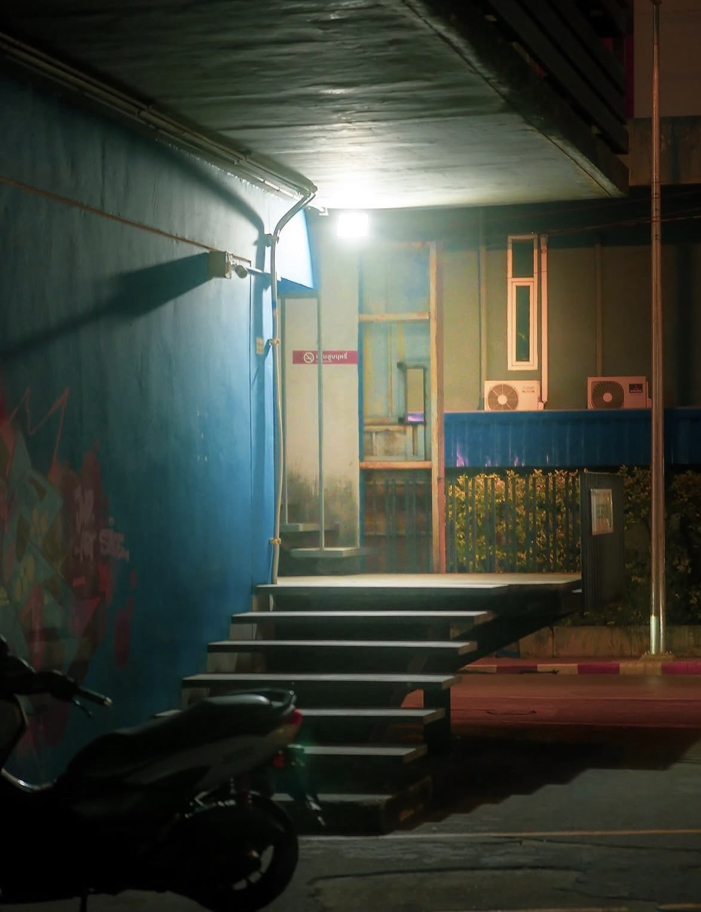
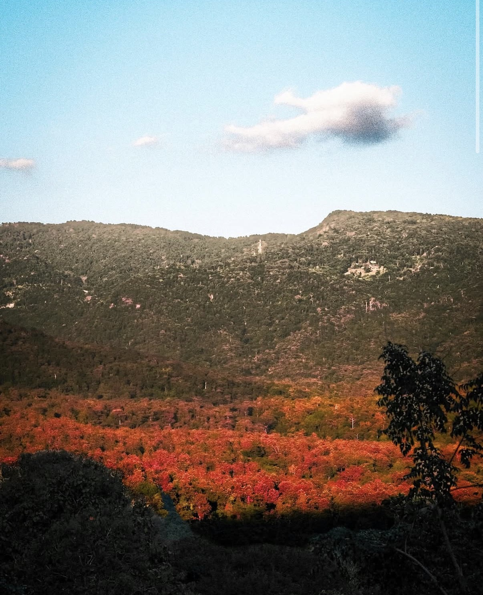
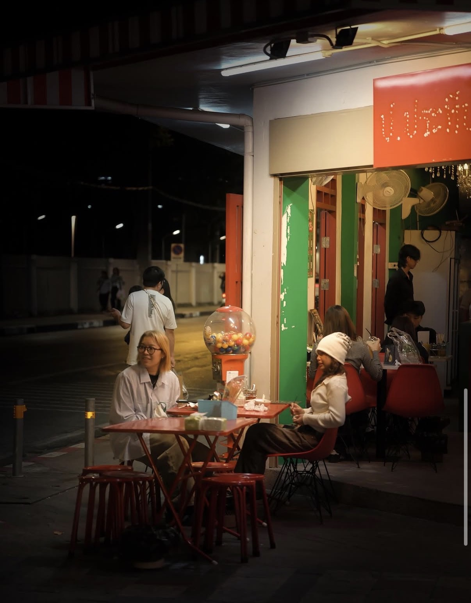
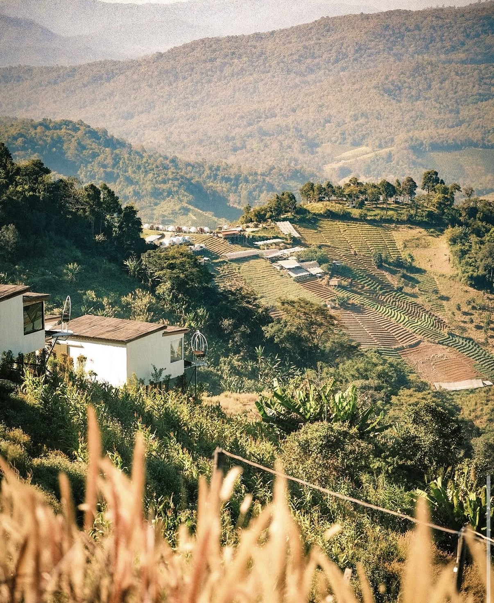
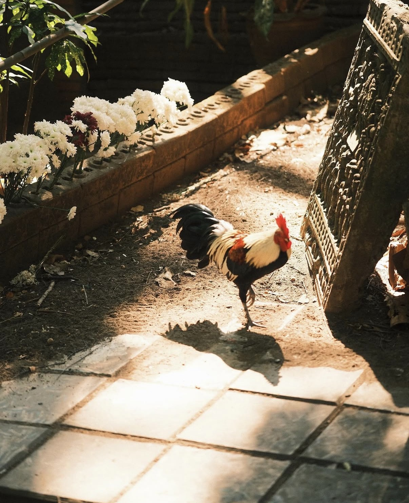

Custom Fujifilm recipes and visual narratives. Shot entirely on X-M4, X-A1, and X-M5.
Focus
Urban & Architecture
Tools
Fujifilm X-Series




X-M4
X-A1
X-M4
X-M5

X-A1

X-M4
Signature configurations for the X-Series sensors.
Perfect for overcast days and urban environments.
Golden hour portraits and deep, rich greens.